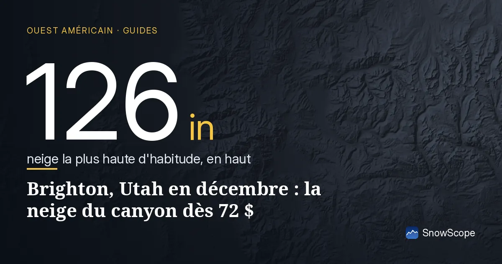

Brighton, Utah en décembre : la neige du canyon dès 72 $
Brighton se situe en haut du Big Cottonwood Canyon, où l'altitude de départ lui donne un avantage sur les stations de basse altitude de l'Utah en décembre. La neige de début de saison y est suffisamment fiable que 89 pour cent des hivers passés ont enregistré une épaisseur mesurable à mi-mois, et un forfait journalier commence à 72 dollars si vous le réservez à l'avance.
Consultez les prévisions neige en temps réel pour Brighton Resort sur l'application SnowScopeHauteurs de neige, alertes poudreuse et carte 3D, gratuitement.
Pourquoi l'altitude compte en décembre
La base de Brighton à 2 666 m signifie qu'elle commence à accumuler de la neige des semaines avant les stations des vallées. Par mi-octobre, une neige durable atteint généralement la mi-montagne à 2 925 m. Cette longueur d'avance est cruciale : le 1er décembre, quand le terrain en basse altitude est souvent dénudé, la mi-montagne enregistre déjà environ 70 cm.
L'emplacement du canyon compte aussi. L'air froid s'écoule d'en haut, et le terrain au sommet à 3 185 m capture la neige que les zones basses ratent. C'est pourquoi l'écart de profondeur entre la base et le sommet augmente au cours du mois.

Suivi décembre semaine après semaine
Le 15 décembre, la mi-montagne atteint 94 cm, avec 68 cm à la base et 115 cm au sommet. Dans près de 9 hivers sur 10 selon les archives, la mi-montagne avait au moins 50 cm à cette date. Même un décembre faible—un sur dix—a livré 52 cm là-bas.
Le jour de Noël, le tableau s'améliore. La mi-montagne atteint 122 cm, et 98 pour cent des hivers avaient au moins 50 cm. Le 31 décembre, l'épaisseur typique est 133 cm à mi-montagne, avec 100 pour cent des hivers au-dessus de 50 cm.

Tarification des forfaits et quand acheter
Brighton utilise la tarification dynamique sur ses forfaits journaliers 2026/27. Le prix de départ est 72 dollars, mais uniquement pour les acheteurs précoces ; les dates de vacances et les achats de dernière minute coûtent plus cher. Le conseil le plus clair de la station est simple : achetez votre forfait en ligne avant la date si vous voulez le meilleur tarif.
Pour une visite de plusieurs jours, la Go Card vous permet de charger trois, quatre ou cinq forfaits journaliers complets sur une seule carte avec jusqu'à 40 pour cent de réduction par rapport au tarif journalier complet. Consultez la page de la station pour le montant exact selon vos dates choisies, car les prix varient avec la demande.
Comment Brighton se compare aux autres options à proximité
Park City Mountain Resort est situé de l'autre côté de la crête et est célèbre pour sa taille, mais son historique de neige raconte une histoire différente en décembre. Le 15 décembre, la mi-montagne de Park City enregistre typiquement 64 cm, et seulement 72 pour cent des hivers avaient 50 cm ou plus. Les chiffres de Brighton sont plus forts à la même date.
Beaver Mountain près de Logan facture un forfait adulte fixe de 75 dollars et enregistre 57 cm à mi-montagne un 15 décembre typique, avec seulement 57 pour cent des hivers au-dessus de 50 cm. Brighton coûte à peu près la même chose si vous attrapez un prix d'oiseau matinal, mais offre une profondeur de neige plus fiable.
La neige de décembre est-elle devenue plus mince ?
Le long historique montre un changement. Dans les 15 premiers hivers des archives (1980-81 à 1994-95), la mi-montagne enregistrait 128 cm le 15 décembre typique, et chaque hiver avait 50 cm ou plus. C'était une fiabilité quasi parfaite.
Dans les 15 hivers les plus récents (2011-12 à 2025-26), la valeur médiane a baissé à 68 cm, et seulement 73 pour cent des hivers ont atteint 50 cm. La saison dernière a donné seulement 43 cm à cette date. Décembre à Brighton reste l'un des paris de début de saison les plus sûrs de l'Utah, mais ce n'est plus une certitude comme auparavant.
Que faire et ce qu'il faut savoir avant de partir
Le Big Cottonwood Canyon exige des règles de traction hivernale quand il neige. Transportez des chaînes dans votre voiture ou utilisez un véhicule 4 roues motrices avec de bons pneus d'hiver. Le bus du canyon fonctionne toute l'année et vous évite entièrement le trajet si cela vous intéresse.
Consultez les prévisions de deux semaines avant de réserver un voyage en décembre sec. Les pistes basses peuvent s'amincir rapidement si la neige est faible. La mi-montagne et au-dessus restent plus fiables, alors prévoyez de passer votre journée aux altitudes plus élevées si la base semble marginale.
Conseils aux skieurs
- Achetez votre forfait journalier en ligne plusieurs semaines à l'avance. La tarification dynamique récompense les réservations précoces ; les forfaits de vacances et de dernière minute coûtent 20 à 40 dollars de plus.
- Si le budget est serré, évitez la dernière semaine de décembre. Cette période coûte généralement la plus chère par forfait.
- Transportez des chaînes de pneus ou conduisez un véhicule 4 roues motrices en tempête. Le Big Cottonwood Canyon applique les règles de traction, ou prenez le bus du canyon pour éviter le trajet.
- Allez à mi-montagne ou plus haut si décembre a été sec. La base peut être mince ; les altitudes supérieures conservent mieux la profondeur.
- Consultez le bulletin du Utah Avalanche Center avant d'aller hors-piste.
À propos de ces chiffres
Les hauteurs de neige des stations sont la neige la plus épaisse sur le haut du domaine à la date indiquée ; ce sont des estimations pour une zone, pas une mesure en un point. Les prévisions peuvent changer. Consultez toujours le bulletin d'avalanche officiel avant le hors-piste.
Bulletins d'avalanche officiels: Utah Avalanche Center
Citer ce bulletin
Pour la recherche, l'enseignement ou la presse : chiffres et graphiques réutilisables librement sous CC BY 4.0 avec cette citation.
SnowScope (2026), Brighton, Utah en décembre : la neige du canyon dès 72 $, https://snowscope.app/blog/fr/2026/11/brighton-utah-december-lift-tickets-snow.html, consulté le 2026-11-14
SnowScope (Atlas Labs). (2026, November 14). Brighton, Utah en décembre : la neige du canyon dès 72 $. SnowScope snow reports. https://snowscope.app/blog/fr/2026/11/brighton-utah-december-lift-tickets-snow.html
BibTeX
@misc{snowscope2026brightonutahdecemberlift,
author = {{SnowScope (Atlas Labs)}},
title = {Brighton, Utah en décembre : la neige du canyon dès 72 $},
year = {2026},
month = nov,
howpublished = {\url{https://snowscope.app/blog/fr/2026/11/brighton-utah-december-lift-tickets-snow.html}},
note = {Published 2026-11-14 15:27 UTC; accessed 2026-11-14}
}· CC BY 4.0 · Méthodes, données et outils →
Brighton Resort : neige et température selon l'altitude, cet hiver vs l'hiver dernier (outils) →
Suivre Brighton Resort
Gratuit : un message quand la neige arrive, et la météo chaque matin.